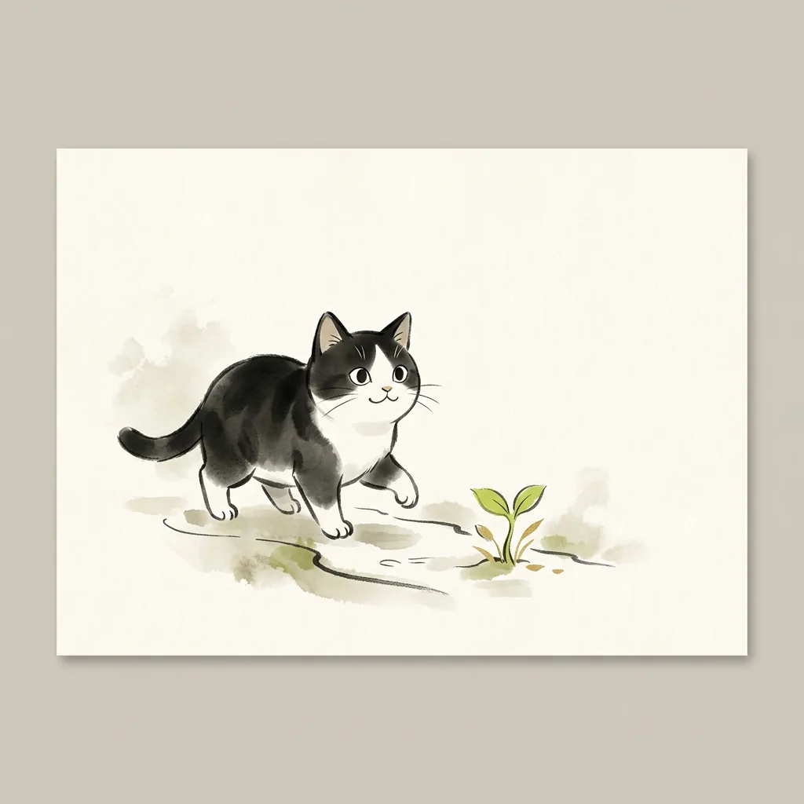
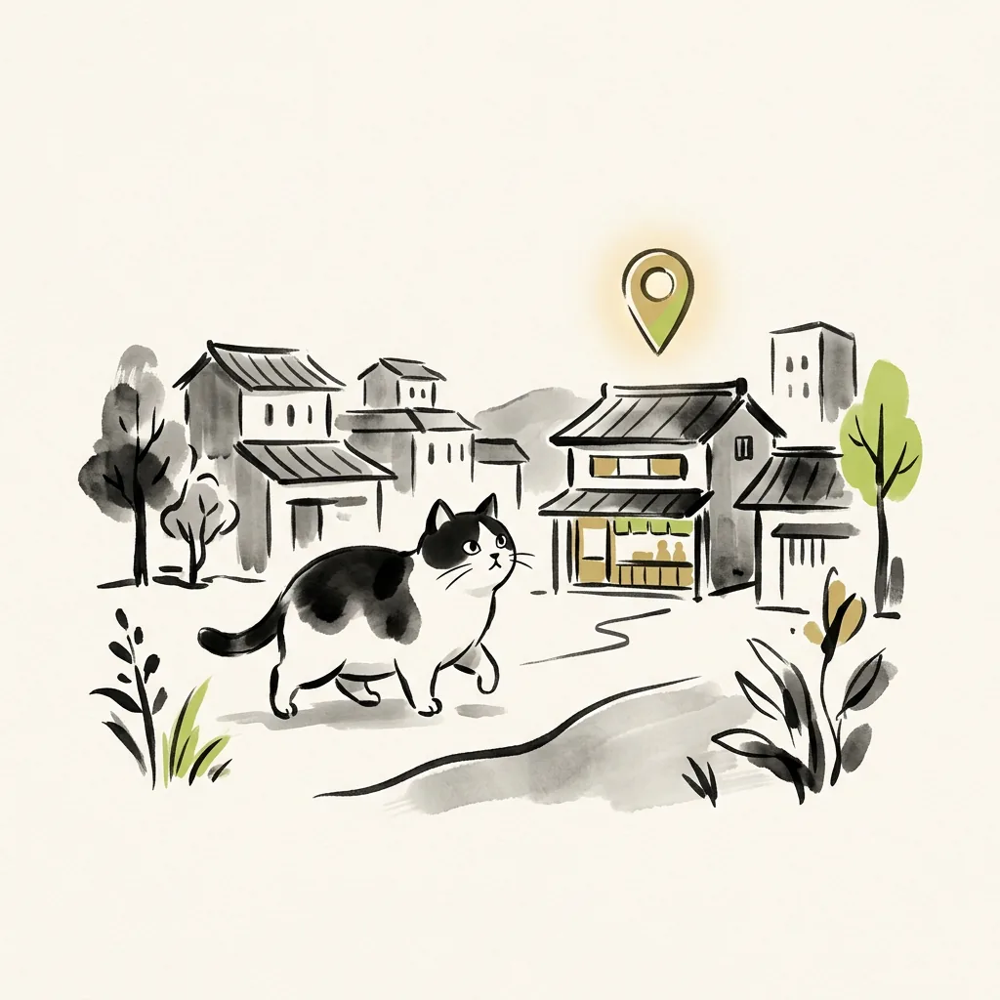
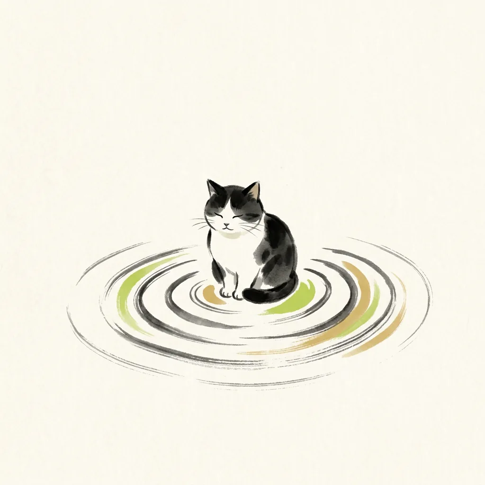
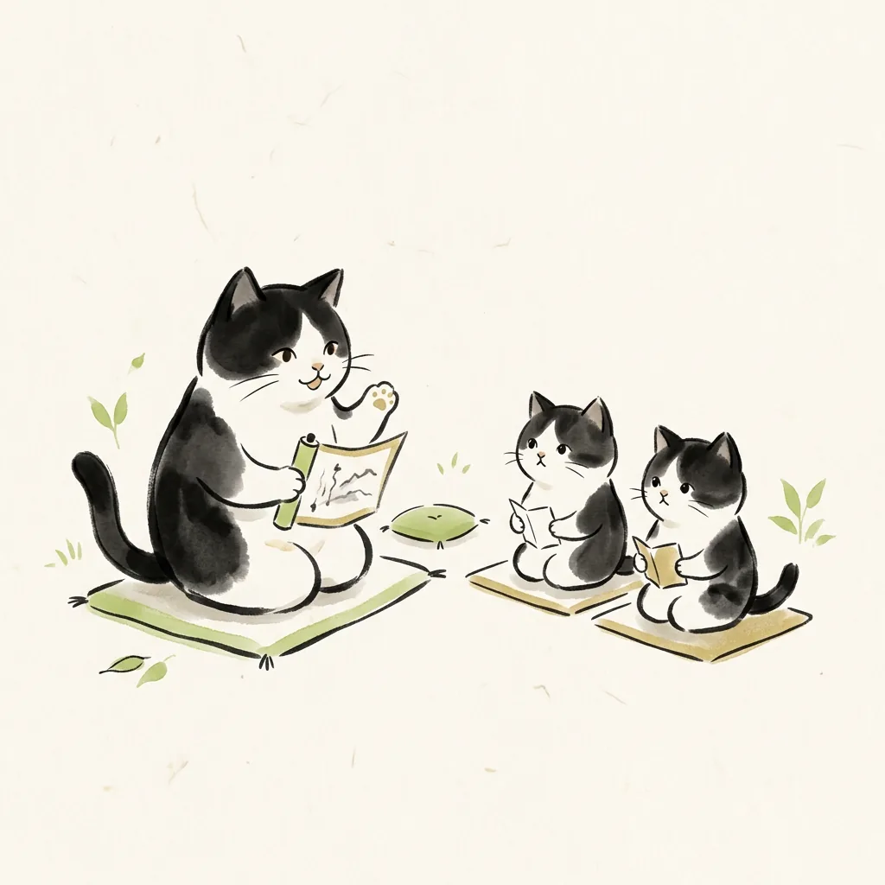
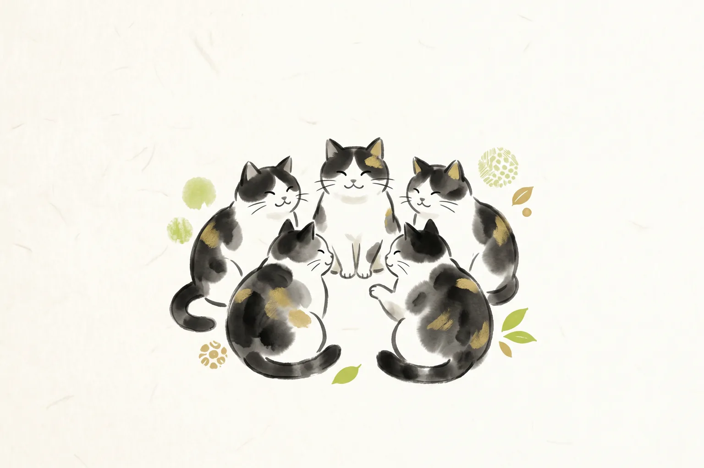

詩吟を、もっと探しやすく、
学びやすく、続けやすく。
全国5,000件の詩吟教室マップを中心に、詩吟を始めたい人・深く学びたい人のための学習ツールをまとめています。
あなたに合う入口を選んでください
目的に合わせて、ぴったりのページへご案内します。

詩吟を始めたい
はじめての方へ。詩吟の魅力と始め方を、順を追ってご案内します。
始め方ガイドへ →
近くの教室を探したい
全国5,000件の教室マップから、地域や流派で探せます。
教室マップへ →
よい吟を聴きたい
実力派吟士の動画を、吟士別・漢詩別に整理したアーカイブスへ。
吟士アーカイブスへ →漢詩を学びたい
作者や時代背景、豆知識まで。詩吟でよく使われる漢詩の辞典へ。
漢詩辞典へ →自分の吟を分析したい
録音した吟の音の動きを可視化して、練習に役立てられます。
吟猫ピッチマップへ →
指導に使いたい
吟猫道場や指導向けツールのご案内。教室運営にもお役立てください。
コミュニティ・指導向け案内へ →
全国5,000件の詩吟教室を探せます。
全国の詩吟教室情報を、地域・流派・連絡先などから探せるマップです。詩吟を始めたい方、近くの教室を探したい方は、まずこちらをご利用ください。
詩吟学習ツール一覧
詩吟の学習を助ける無料ツールを開発・公開しています。


動画で詩吟を学ぶ
heyheyのYouTubeでは、詩吟をわかりやすく学べる動画を発信しています。初心者向けのおすすめ動画や、吟猫道場への入り方もこちらから確認できます。

詩吟の始め方を7日間で学べます。
詩吟を始めたい方に向けて、教室の探し方、良い吟の聴き方、漢詩の学び方、練習の続け方を7日間でお届けします。あわせて、詩吟教室マップや吟猫ツールの更新情報もお知らせします。
あなたに合った入口からどうぞ:

書籍・音声・その他の活動


よくある質問
詩吟とは何ですか？
詩吟とは、漢詩や和歌などに独特の節をつけて声高らかに吟じる、日本の伝統芸能です。おなかの底から声を出すため、健康や姿勢にも良いと言われています。年齢を問わず始められ、全国に多くの教室があります。まずは始め方ガイドをご覧ください。
詩吟初心者は何から始めればいいですか？
まずは詩吟がどんなものかを知り、実際に声に出してみるのがおすすめです。詩吟を始める完全ガイドでは、教室の探し方から練習の続け方までを順番に紹介しています。あわせて初心者向けの7日間講座では、詩吟の始め方を毎日1通ずつメールでお届けしています。
近くの詩吟教室はどう探せますか？
当サイトの全国詩吟教室マップをご利用ください。全国約5,000件の詩吟教室を、地域・流派・連絡先から探せます。お住まいの地域名で調べるだけで、近くの教室が見つかります。気になる教室が見つかったら、まずは見学のご連絡をしてみましょう。
詩吟の流派とは何ですか？
流派とは、詩吟の節回しや発声の型を受け継ぐグループのことです。全国には多くの流派があり、同じ漢詩でも流派によって節の付け方が少しずつ異なります。教室を選ぶときには、流派の違いもひとつの目安になります。詩吟大辞典でも流派について順次解説していきます。
詩吟でよく使われる漢詩には何がありますか？
石川丈山の「富士山」や頼山陽の「川中島」などが有名で、多くの流派で吟じられています。漢詩辞典では、こうした漢詩を作者や時代背景、豆知識とともに調べられるよう整理を進めています。好きな漢詩を見つけることが、詩吟を長く楽しむ近道になります。
自分の吟を上達させるにはどうすればいいですか？
自分の吟を録音して聴き返すことがいちばんの近道です。吟猫ピッチマップを使うと、録音した吟の音の動きを目で確かめられます。YouTubeのおすすめ動画も参考になります。さらに深く学びたい方は、オンライン教室の吟猫道場もご利用ください。
掲載情報の修正や削除は依頼できますか？
はい、受け付けています。詩吟教室マップや各種アーカイブに掲載している情報について、教室や吟士など関係者の方からの修正・削除依頼に対応しています。修正・削除依頼ページのフォームから、該当する掲載内容とご希望をお知らせください。確認のうえ順次対応いたします。